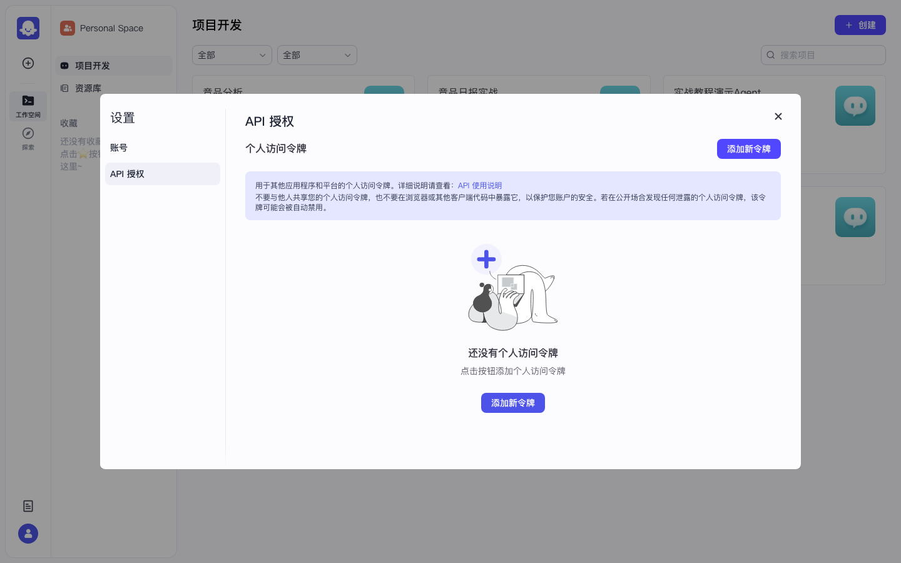
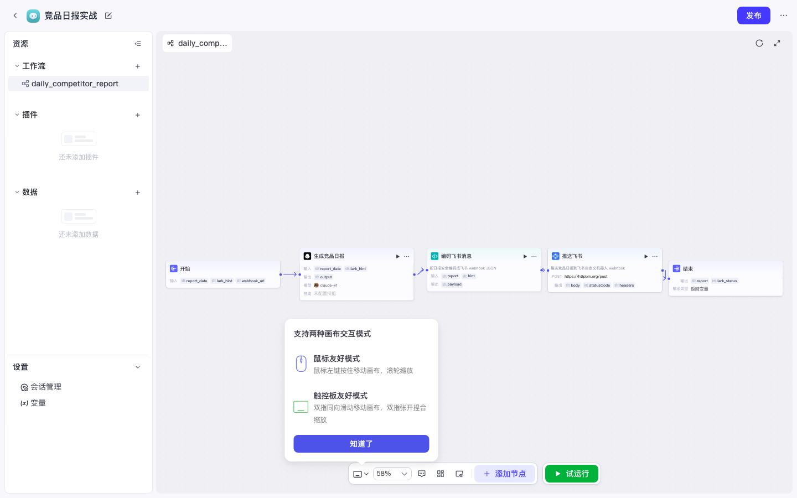

Coze 实战 · P08 · ≈35 min · 开源部分可用
P08 · 发布 · PAT · OpenAPI 调用
把调试好的智能体/工作流变成可被 curl / cron 调用的产物。开源发布渠道主要是 API 与 Chat SDK（无社交渠道）。建议先完成 P01 工作流试运行。
1
发布智能体或应用
作用：草稿 → 已发布版本；OpenAPI 通常要求资源已发布。
路径 A · 发布智能体
- 打开智能体 IDE，点右上角 发布
- 「发布记录」可写：
实战教程首发 - 「选择发布平台」勾选 API、Chat SDK（应显示「已授权」）
- 再点页面右上角蓝色 发布 确认

图：智能体发布页。API / Chat SDK 已勾选且「已授权」。
路径 B · 发布应用（含工作流）
- 打开应用 IDE（如「竞品日报实战」）
- 右上角 发布，按向导勾选 API / Chat SDK 并确认

图：应用侧发布入口（从应用 IDE 点「发布」）。
开源版看不到飞书机器人渠道 / 应用商店等商业渠道，属正常裁剪。
2
创建个人访问令牌（PAT）
作用：OpenAPI 的 Bearer Token。只显示一次，请立刻复制保存。
- 在任意工作空间页，点左下角头像
- 打开 设置 / 账号设置
- 左侧切到 API 授权
- 点 添加新令牌，填名称（如
local-cron），创建 - 把弹出的 token 复制到密码管理器（关闭后无法再看明文）

图：设置弹窗 →「API 授权」→「添加新令牌」。空状态时中间也有大按钮。
安全
不要把 PAT 写进前端页面或公开仓库。泄露后到本页删除旧令牌并新建。
3
抄下 workflow_id
作用：调用
/v1/workflow/run 时必须指定工作流 ID。- 打开应用内工作流画布
- 看浏览器地址栏，末段数字即 ID：
# 示例（把数字换成你的）
http://localhost:8888/space/.../project-ide/.../workflow/7662919178956832768
# ↑ workflow_id
图：工作流编辑页；从 URL 抄 workflow_id。
| 参数 | 从哪来 |
|---|---|
workflow_id | URL 末段 |
parameters.report_date | 与开始节点变量名一致（P01 用这个） |
parameters.lark_hint | 同上 |
Authorization | Bearer <PAT> |
4
用 curl 调用工作流
export COZE_PAT='粘贴你的PAT'
export WF_ID='7662919178956832768' # 换成你的
curl -sS -X POST 'http://localhost:8888/v1/workflow/run' \
-H "Authorization: Bearer ${COZE_PAT}" \
-H 'Content-Type: application/json' \
-d "{
\"workflow_id\": \"${WF_ID}\",
\"parameters\": {
\"report_date\": \"$(date +%F)\",
\"lark_hint\": \"增长情报群\"
}
}" | python3 -m json.tool✅ 验收：HTTP 200；JSON 里能看到输出变量（如
report / lark_status）。若工作流含 HTTP 推飞书，群里或 httpbin 侧应有对应结果。常见卡点
401：PAT 错或未复制完整。
找不到工作流：未发布，或
参数无效：开始节点变量名与
找不到工作流：未发布，或
workflow_id 抄错。参数无效：开始节点变量名与
parameters key 不一致（大小写也要一致）。
5
外部 cron（开源无内置定时）
原因：开源工作流 Start Trigger / Cron 被
IS_OPEN_SOURCE 关掉。每日任务用系统 crontab。# crontab -e 每天 09:00
0 9 * * * curl -sS -X POST 'http://localhost:8888/v1/workflow/run' \
-H "Authorization: Bearer 你的PAT" \
-H 'Content-Type: application/json' \
-d "{\"workflow_id\":\"你的WF_ID\",\"parameters\":{\"report_date\":\"$(date +\%F)\",\"lark_hint\":\"增长情报群\"}}" \
>> /tmp/coze-comp-daily.log 2>&1✅ 本课通过：发布成功 + PAT 可用 + 至少一次 curl 跑通。下一步可看 P09 Chatflow / Chat SDK。